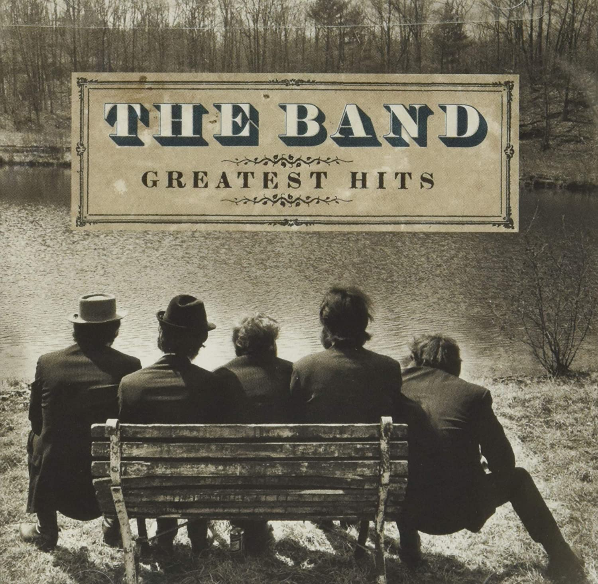

Day 25

The Band ◆ Ophelia ◆ Northern Lights–Southern Cross ◆ 1975
这个乐队是我在看卡罗尔和星期二的时候发现的。（渡边老贼翻车了，看三集就看不下去了。完全可以理解他不想被星际牛仔束缚，卡洛尔和星期二一边做动画一边发掘歌手也挺有意思，但就是不好看啊，动画不好看别的都是空谈）
想更多了解 The Band 可以看看他们最后一次演出的纪录片 The Last Waltz，很多有名的人都去了，包括 Bob Dylan 和 Neil Young。和 Bob Dylan 一样，Neil Young 我也听得少，有时间应该找来听听。主要是这哥们太高产，不知道从哪开始……
说实话上面那张封面有点阴间，我更喜欢这张：

Boards on the window, mail by the door
What would anybody leave so quickly for?
Ophelia - Where have you gone?
The old neighborhood just ain't the same
Nobody knows just what became of
Ophelia - tell me, what went wrong?
Was it somethin' that somebody said?
Mama, I know we broke the rules
Was somebody up against the law?
Honey, you know I'd die for you
Ashes of laughter, the coast is clear
Why do the best things always disappear
Like Ophelia - please darken my door
Was it somethin' that somebody said?
Honey, you know we broke the rules
Was somebody up against the law?
Honey, you know I'd die for you
They got your number, scared and runnin'
But I'm still waitin' for the second comin'
Of Ophelia - come back home